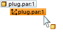
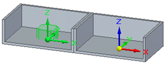
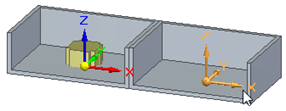
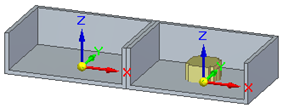

Edit a Match Coordinate Systems single relationship
-
In PathFinder, right-click the Match Coordinate Systems relationship and then click Edit Definition, as shown next.

The part is highlighted.

-
On the command bar, click the Target Part - Element option.
-
Click the coordinate system to which you want to match the part.

The part is aligned to the new coordinate system.
